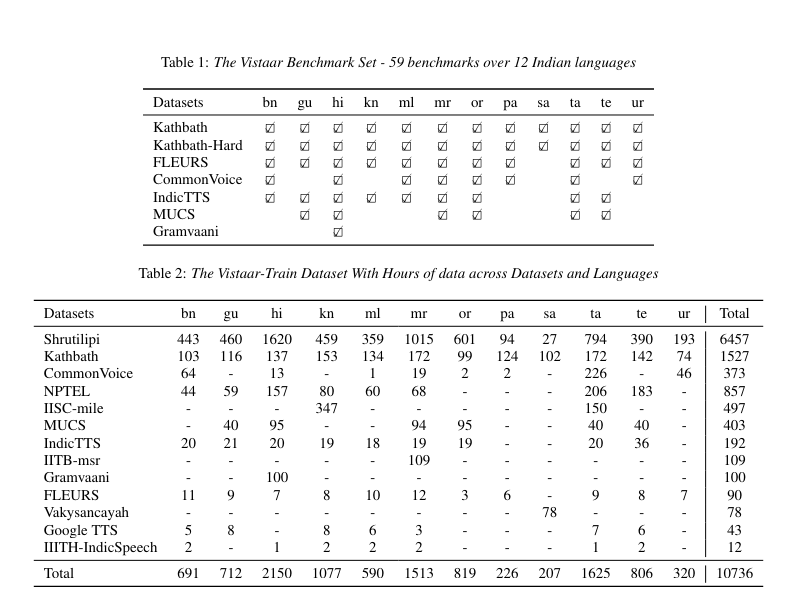

Vistaar - Diverse Benchmarks and Training Sets for Indian Language ASR
AI4Bharat Paper Reading Group
Friday, April 26, 2024
whoami

whoami
- ML Engineer at Sarvam.ai
- Volunteer @ Swathanthra Malayalam Computing (SMC)
- Speaker in International conferences like FOSSASIA Summit, Pycon India, Tensorflow Usergroup India summit etc.
- Creator of indicsubtitler.in and Malayalam voice models like Vegam-whisper, MalWhisper etc.
- Maintains whisper_normalizer a python packages with 175,000+ downloads.
What’s in a name
- വിസ്താരം
- Vistaar(विस्तार) meaning broad in Hindi
- They propose collation of benchmarks across languages and domains/types of data. We call this Vistaar (meaning broad in Hindi) and it comprises of publicly available benchmarks across 12 languages, leading to 59 computed WER values across benchmarks and languages.
Abstract of paper
The research emphasizes the need for bettering Automatic Speech Recognition (ASR) systems so that more individuals worldwide can utilize Language Model (LLM) based functionalities.
The study zeroes in on Indian languages, positing that a broad array of benchmarks is crucial for gauging and improving ASR systems designed for these languages.
Abstract of paper
In an effort to solve this issue, the researchers have compiled Vistaar - a collection of 59 benchmarks that span different language and domain combinations.
The researchers also fine-tuned the IndicWhisper models using publicly available training datasets that included twelve different Indian languages, amounting to 10.7 thousand hours of data.
The study demonstrated that using IndicWhisper greatly enhances the efficiency of the considered Automatic Speech Recognition (ASR) systems when tested using the Vistaar benchmarking tool.
Abstract of paper
In fact, IndicWhisper scored the lowest Word Error Rate (WER) in 39 out of the 59 tested benchmarks, an average reduction of 4.1 WER, demonstrating its noteworthy precision in interpreting spoken words.
Furthermore, in an effort to contribute to the broader research community, the team decided to make all datasets, computer codes, and models openly available and accessible via a GitHub link they provided: https://github.com/AI4Bharat/vistaar.
Interspeech 2023 conference
Authors of paper
- Kaushal Santosh Bhogale (PHD Scholar @ IIT Madras)
- Sai Sundaresan (BTECH Student @ IIT Kharagpur)
- Abhigyan Raman (Founding Engineer @ Sarvam.ai)
- Tahir Javed (PHD Scholar @ IIT Madras)
- Mitesh M. Khapra (Professor @ IIT Madras)
- Pratyush Kumar (Co-founder @ Sarvam.ai)
Vistaar Dataset Diversity
Vistaar Dataset comprises of
- Traininig dataset
- Benchmarking set
Training Dataset
- Shrutlipi
- NPTEL
- IISc-MILE
- IIIB-MSR
- Vakyasancayah
- GoogleTTS
- IIIT IndicSpeech
Benchmarking Dataset
- Kathbath
- Kathbath-hard
- FLEURS
- CommonVoice
- IndicTTS
- MUCS
- GramVaani
Collated dataset diversity across languages and duration
Indic Whisper
To illustrate the effectiveness of the improved Automatic Speech Recognition (ASR) models on the Vistaar-train dataset, the researchers had to make deliberate choices regarding the model architecture. They decided to settle on the Whisper models from OpenAI due to their noticeable enhanced performance.
The researchers’ choice was guided by the satisfactory results from the Hindi language using portions of the training data. The Whisper models demonstrated a significant decrease in the Word Error Rate (WER), surpassing all other model architectures.
Indic Whisper
- For each of the 12 languages, the researchers meticulously adjusted the ‘Whisper-medium’ model using the Vistaar-train. This methodical fine-tuning ensured the model was well-suited and effective for each language.
ASR Systems Compared
- IndicWav2Vec
- Nvidia-medium
- Nvidia-large
- Google STT
- Azure STT
Performance of Indic Whisper in hindi
Indic Whisper Multiple languages
Let’s look the source code
- training.py
- evaluation.py
- transcribe.py
Conclusion
The researchers argue that to improve IndicASR, different ASR systems need to be tested on a varied set of benchmarks. These benchmarks should cover different languages and types of data.
To demonstrate this, they use the Vistaar benchmark, a tool they created to compare the effectiveness of various ASR systems.
The team also present their IndicWhisper models, which build upon OpenAI’s Whisper models. These were further developed using the Vistaar-training set, which includes over 10,000 hours of data in 12 Indian languages.
Conclusion
The IndicWhisper models have achieved noticeably lower Word Error Rate (WER) across a wide range of benchmarks, showing their high level of performance.
By sharing their findings, the goal is to contribute to the development of more advanced models for automatic speech recognition, particularly for languages spoken in India.
Parting thoughts
- My MTech Final thesis story